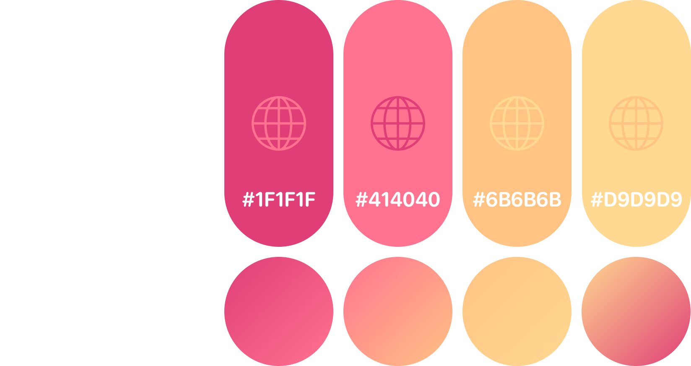

E-commerce App Concept
A mobile shopping experience designed to make browsing, comparing, and purchasing products simple, fast, and visually engaging.

Problem
Many e-commerce apps overwhelm users with too many options, complex navigation, and cluttered interfaces, making it harder to find products quickly.
Product pages can also lack clarity, making it difficult for users to compare options, understand value, and confidently make purchasing decisions.
Process
I started by defining the core structure of the app, focusing on product discovery, navigation, and key user actions such as browsing, selecting, and purchasing items.
Low-fidelity wireframes helped establish layout and hierarchy, while high-fidelity designs refined the visual style, interaction patterns, and overall usability.

Visual Identity

Design
The final design uses a soft colour palette and rounded UI elements to create a friendly and approachable shopping experience.
A clean layout and strong visual hierarchy help users quickly scan products, compare options, and focus on key information such as price, ratings, and availability.
Key features include:
- A clear home screen with categories and highlighted offers
- Product cards with essential information for quick comparison
- Detailed product pages with images, reviews, and options
- A simple and accessible navigation system for smooth browsing
- Consistent layout and spacing to improve readability
Result
The final concept simplifies the shopping experience by making product discovery and decision-making more intuitive.
It allows users to move quickly from browsing to purchase, reducing friction and improving overall usability.
This project helped me explore how layout, hierarchy, and interaction design can improve usability in e-commerce experiences.